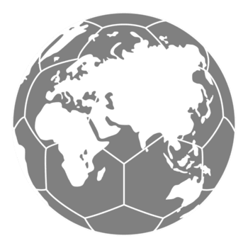

Una solución inteligente para reducir residuos mediante vasos reutilizables con tecnología QR.
Somos SVR 2026, una iniciativa enfocada en transformar la experiencia del Mundial mediante un sistema de reutilización inteligente de vasos con QR, reduciendo residuos y promoviendo consumo responsable.
Millones de vasos desechables utilizados durante el torneo.
Impacto directo en espacios públicos y áreas naturales.
Producción y desecho elevan emisiones contaminantes.
Cada vaso integra un QR único para rastreo, devoluciones y recompensas.
Reducción significativa de residuos.
QR único evita fraude.
Depósito reembolsable.
Fortalece reputación sustentable.
Bienvenido a tu cuenta del sistema de vasos reutilizables.
Utiliza tu saldo para comprar bebidas o alimentos dentro del estadio.
Disponible al finalizar el evento. Transfiere tu dinero a tu cuenta bancaria de forma segura.
Producción y consumo responsables.
Trabajo decente y crecimiento económico.
Uso de vasos biodegradables reutilizables.
Control total del proceso de uso y retorno.